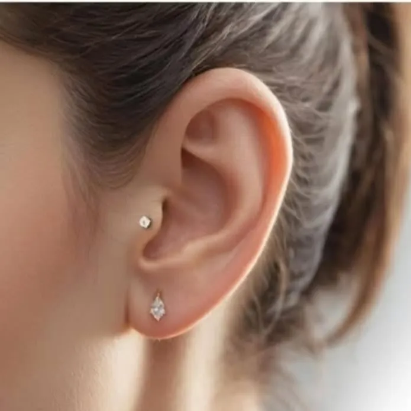

Időpont nélkül
Fülbelövés már csecsemőkortól
Pici fülbevaló, nagy öröm! Gyorsan és kíméletesen, higiénikus körülmények között — babáknak, gyerekeknek és felnőtteknek is. Nem kell előre időpontot foglalnod: gyere be nyitvatartási időben.